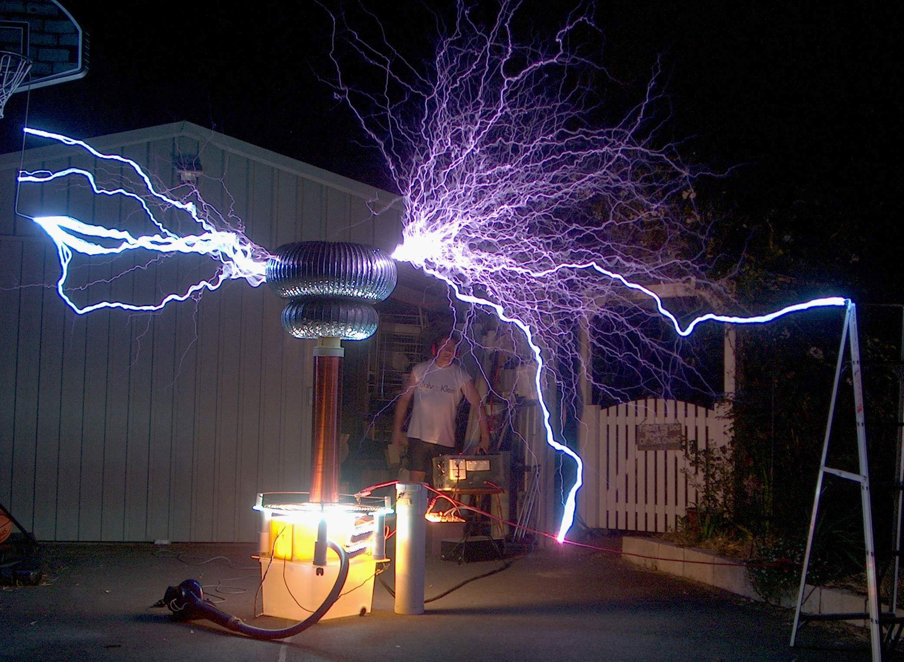

Nikola Testla s-a nascut la miezul noptii dintre 9 si 10 iulie 1856 Smiljan, Imperiul Austriac.
Acesta a fost un important om de stiinta, punand bazele constintelor moderne despre curentul alternativ, puterea
electrica, sisteme de curent aleternativ, sisteme polifazice, sisteme de distributie a puterii si motorul pe
curent aleternativ.
Amprenta lui Tesla poate fi observată în civilizația modernă oriunde este folosită electricitatea. Pe lângă
descoperirile sale despre electromagnetism și inginerie, Tesla este considerat un pionier în domeniile roboticii,
balisticii, științei calculatoarelor, fizicii nucleare și fizicii teoretice. Nikola Tesla considera cercetarea
diferitelor întrebări ridicate de către știință drept cea mai nobilă metodă de îmbunătățire a condiției umane cu
ajutorul principiilor științei și progresului industrial și una care să fie compatibilă cu natura.
Tesla a urmat cursurile școlii „Gymnasium Karlovac” în Karlovac, unde a terminat în doar trei ani ciclul de
învățământ de patru ani.
Ulterior a început studiile de inginerie electrică la Universitatea din Graz în 1875, timp în care a experimentat
unele utilități ale curentului alternativ. Unele surse afirmă că a fost licențiat al Universității din Graz,
cu toate acestea, universitatea afirmă că nu a obținut nicio diplomă și că nu a trecut mai departe de al doilea
semestru al anului trei, moment în care a renunțat la cursuri. Mai multe informatii aici.
Inventii
Bobina Tesla

Poate cea mai cunoscuta inventie a geniului, bobina Tesla este un circuit de transformator
rezonant electric conceput in 1891.
Aceasta este o metodă utilizată pentru a produce electricitate în curent alternativ atât de înaltă
tensiune, cât și de joasă tensiune, de înaltă frecvență.
Tesla a folosit aceste circuite pentru a efectua experimente inovatoare în iluminatul electric,
fosforescență, generarea de raze X, fenomene de curent alternativ de înaltă frecvență, electroterapie și
transportul energiei electrice fără fire. Circuitele bobinelor Tesla au fost utilizate comercial în
emițătoare de radio sparkgap pentru telegrafie fără fir până în anii 1920 și în echipamente medicale cum
ar fi electroterapia și dispozitivele cu radiații violete. Astăzi, utilizarea lor principală este pentru
afișaje de divertisment și educație, deși bobinele mici sunt încă folosite ca detectori de scurgeri pentru
sistemele cu vid înalt.
Supapa Tesla
Supapa Tesla, numita conducta valvulara de catre inventatorul sau, este o supapa
de retinere cu geometrie fixa.Permite lichidelor sa curga intr-o singura directie, fara piese in miscare.
Albert Einstein
(14 martie 1879 - 18 aprilie 1955)
Albert Einstein s-a nascut pe 14 martie 1879 la Ulm in Imperiul German.
A fost un a fost un fizician teoretician evreu, apatrid din 1896, elvețian din 1899, emigrat în 1933 în SUA,
naturalizat american în 1940, profesor universitar la Berlin și Princeton.
A fost autorul teoriei relativității și unul dintre cei mai străluciți oameni de știință ai omenirii.
străluciți oameni de știință ai omenirii.
În 1921 i s-a decernat Premiul Nobel pentru Fizică[23].
Cele mai multe dintre contribuțiile sale în fizică sunt legate de teoria relativității restrânse (1905), care
unesc mecanica cu electromagnetismul, și de teoria relativității generalizate (1915) care extinde principiul
relativității mișcării neuniforme, elaborând o nouă teorie a gravitației.
Alte contribuții ale sale includ cosmologia relativistă, teoria capilarității, probleme clasice ale mecanicii
statistice cu aplicații în mecanica cuantică, explicarea mișcării browniene a moleculelor, probabilitatea
tranziției atomice, teoria cuantelor pentru gazul monoatomic, proprietățile termice ale luminii (al căror studiu a
condus la elaborarea teoriei fotonice), teoria radiației (ce include emisia stimulată), teoria câmpurilor unitară
și geometrizarea fizicii.
Mai multe informatii
aici.
Teorii
Cea de-a patra lucrare importantă publicată de Einstein în 1905, "Asupra electrodinamicii corpurilor în mișcare", conținea ceea ce avea să fie cunoscută mai târziu ca Teoria relativității restrânse, una dintre cele mai celebre contribuții ale sale, în care demonstrează că teoretic nu este posibil să se decidă dacă două evenimente care se petrec în locuri diferite, au loc în același moment sau nu. Ideile de bază au fost formulate de Einstein încă de când avea 16 ani (deci cu 10 ani în urmă).
Încă de la Newton, filozofii naturali (denumirea sub care erau cunoscuți fizicienii și chimiștii) încercaseră să înțeleagă natura materiei și a radiației, precum și felul în care interacționau într-o imagine unificata a lumii. Ideea că legile mecanicii sunt fundamentale era cunoscută drept concepția mecanicistă asupra lumii, în timp ce ideea că legile electricității sunt fundamentale era cunoscută drept concepția electromagnetică asupra lumii. Totuși, niciuna dintre idei nu era capabilă să ofere o explicație coerentă asupra felului cum radiația (de exemplu lumina) și materia interactionează atunci când sunt văzute din sisteme de referință inerțiale diferite, adică interacțiile sunt urmărite simultan de un observator în repaus și un observator care se mișcă cu o viteză constantă.
Supapa Tesla
Supapa Tesla, numita conducta valvulara de catre inventatorul sau, este o supapa
de retinere cu geometrie fixa.Permite lichidelor sa curga intr-o singura directie, fara piese in miscare.